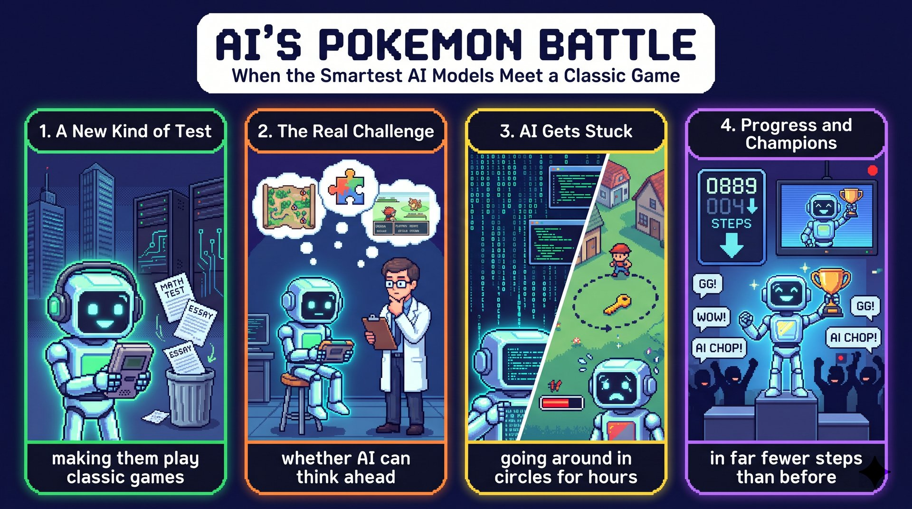

科技巨擘不再只出紙筆題，而是讓全球最聰明的生成式 AI 模型去玩經典寶可夢遊戲。
making them play classic games回合制加上解謎，正好用來測試 AI 能否提前規劃，並在漫長複雜的任務中保持專注。
whether AI can think ahead幾秒就能寫出複雜程式碼的模型，可能因為忘了關鍵道具或一慌，就原地打轉好幾個小時。
going around in circles for hours新版模型破關的步驟少得多，證明它們學得會；粉絲也能在 Twitch 直播上親眼見證。
in far fewer steps than before(You) + Forget (V) + boring math tests and essay writing (O)。
and 只連接兩個受詞 math tests 和 essay writing。
forget + N.（忘掉、別管）；essay writing 是動名詞當名詞，指「寫作文」這件事，和 math tests 對等。
Forget（祈使動詞）boring math tests and essay writing!（受詞（對等名詞））語塊 1（別再提）➔ 語塊 2（無聊的數學考試和作文了）
這句很短，從頭順著翻就好，重點在語氣。
and 兩邊要對等：math tests 是名詞、essay writing 是動名詞，都能當受詞，所以可以並列。
Don't + V。Forget everything you know about ...!Tech giants (S) + are testing (V) + the world's smartest generative AI models (O)。
by making them play ... 是 by + V-ing 表手段，內含使役句型 make + O + 原形 V。
make + O + V 原形：✗ making them to play；介系詞 by 後接 V-ing；giant 在此是名詞「巨擘」；生成式 AI 是 generative AI。
Tech giants are testing（主幹）the world's smartest generative AI models（受詞）by making them play classic Pokémon games.（by + V-ing（手段））語塊 1 主詞（科技巨擘正）➔ 語塊 3 提前（透過讓）＋語塊 2（全球最聰明的生成式 AI 模型）＋語塊 3 後半（玩經典寶可夢遊戲）➔ 語塊 1 動詞（來測試它們）
主詞先翻「科技巨擘正」，接著先別急著說「測試」。
by 後面一定接名詞或 V-ing，所以是 making，不是 make。making them play：使役動詞 make 後面的第二個動詞用原形，不加 to。這是克漏字和改錯的常考點。
by + V-ing＝藉由；make + O + V；被動才加 to：they are made to play。S test N by making it + V. 手段一個片語交代完。this (S) + is (V) + more than just a fun experiment (C)。
For researchers 是介系詞片語，標明「對誰而言」。
more than just 不是比較，要譯成否定語氣「不只是」。
more than (just) + N.（不只是）；experiment 是可數名詞，前面要有冠詞 a；researcher 指人，research 才是研究這件事。
For researchers,（介系詞片語（立場））this is more than just（主幹）a fun experiment.（補語）語塊 1（對研究人員來說）➔ 語塊 2（這不只是）➔ 語塊 3（一場有趣的實驗）
這句可以照順序翻，句首的 For researchers 先翻「對研究人員來說」。
this is more than a fun experiment，For researchers 是放在句首的介系詞片語。more than 後面接名詞而且沒有比較對象（than 後面沒有另一個事物可比），就是「不只是」。
more than just＝not just；另有 more than happy（非常樂意）。For N, this is more than just ... 先否定表面印象，再講深層意義。Pokémon games (S) + are (V1) + turn-based (C) ＋ involve (V2) + solving puzzles (O)。
and 連接兩個動詞 are 和 involve，共用主詞 Pokémon games。
involve + N./V-ing，✗ involve to solve；主詞複數，所以用 involve 不加 s；turn-based 是形容詞，靠連字號連接。
Pokémon games are turn-based（主幹一）and involve（對等連接＋動詞）solving puzzles.（受詞（動名詞））語塊 1（寶可夢遊戲採回合制）➔ 語塊 2（而且需要）➔ 語塊 3（解謎）
主詞和第一個動詞先翻「寶可夢遊戲採回合制」，再順著往下接。
and 前面是動詞 are，所以 and 後面也要是動詞，主詞一樣是 Pokémon games。solving puzzles，動名詞。四個選項裡 allow 和 encourage 都要接 sb to V，只有 involve 能直接接 V-ing 又語意通順；practice 雖能接 V-ing，但遊戲不會「練習」。
involve + N./V-ing；be involved in（參與）。同家族接 V-ing：enjoy、avoid、finish。The job involves meeting clients. 用 involve 取代 need to，語感更成熟。They (S) + are (V) + an excellent way (C)，They 指 Pokémon games。
to test 不定詞修飾 way；whether AI can ... 是名詞子句，當 test 的受詞；子句內 and 連接 think ahead 和 stay focused。
a way to V（做某事的方式）；stay focused on 用 p.p. focused；think ahead 不及物，後面不接受詞；whether 表「是否」，不能換成 what。
They are an excellent way（主幹）to test（不定詞（修飾 way））whether AI can think ahead（名詞子句）and stay focused on long, complex missions.（對等動詞片語）語塊 1 主詞（它們是）➔ 語塊 2 提前（測試）➔ 語塊 3（AI 能否提前規劃）➔ 語塊 4（並在漫長複雜的任務中保持專注）➔ 語塊 1 壓軸（的絕佳方式）
主詞先翻「它們是」，但 way 先不要說，因為它後面的修飾全部要搬到前面。
test，要接一整件事當受詞，所以這裡是名詞子句。AI can think ahead and stay focused ... 主詞動詞都齊全，think ahead 又是不及物，不缺任何成分。不缺成分就不能選 what（what 要在子句裡當主詞或受詞）。whether＝if（作受詞時）；句首當主詞、介系詞後面只能用 whether。N is an excellent way to test whether ... 議論文談「為什麼值得做」很好用。they (S) + often struggle (V) + with the tasks in a video game。
While 引導讓步副詞子句，表「雖然」；前後形成對比，主句不再加 but。
While 在句首對比時譯「雖然」，不是「當……時」；struggle with N（吃力應付）；code 指程式碼時不可數，不加 s；in seconds 指「幾秒內」。
While these models can write complex code（讓步副詞子句）in seconds,（介系詞片語（時間））they often struggle（主幹）with the tasks in a video game.（介系詞片語）語塊 1 前半（雖然這些模型）➔ 語塊 2 提前（幾秒內）➔ 語塊 1 後半（就能寫出複雜的程式碼）➔ 語塊 4 提前（但面對電玩遊戲中的任務）➔ 語塊 3（卻常常很吃力）
這句從 While 子句開始翻，英文和中文的大順序一樣，都是先讓步再轉折。
While S + V, S + V＝Although ...；struggle with N＝have difficulty with N。While A can ..., it often struggles with ... 先肯定再轉折，論點更有層次。AI players (S) + can end up (V) + going around in circles (補語)。
because 引導原因副詞子句，裡面 or 連接 forget 和 panic；panic 後面再接 when 時間子句，是兩層從屬結構。
end up + V-ing，✗ end up to go；go around in circles 原地打轉；be close to + V-ing 的 to 是介系詞；panic 三態 panicked 要加 k。
AI players can end up（主幹）going around in circles for hours（V-ing 補語）because they forget a key item（原因副詞子句）or panic（對等動詞）when a Pokémon is close to losing energy.（時間副詞子句）語塊 1 主詞（AI 玩家可能）➔ 語塊 3 提前（因為忘記一項關鍵道具）➔ 語塊 5 提前（或在寶可夢快要沒有體力時）➔ 語塊 4（驚慌失措）➔ 語塊 1 後半（結果）➔ 語塊 2 壓軸（原地打轉好幾個小時）
這句不能從頭順翻，因為英文把結果放最前面。我們先留住主詞「AI 玩家可能」，把結果 end up going around in circles 放到最後。
because：往左看是整個主句，往右看是完整句，表原因。or：左右兩邊要對等，左邊是 forget，右邊是 panic，兩個都是 they 的動詞，所以 panic 用原形。這裡的 panic 是動詞，不是名詞。when：只掛在 panic 後面，說明什麼時候慌。going，四個片語只有 end up 接 V-ing 又表結果。stick to 的 to 雖是介系詞也能接 V-ing，但語意是「堅持」，不合。
end up + V-ing／p.p.／Adj.／介系詞片語；be close to＝be near to，to 是介系詞。We ended up staying at a hotel because ... 記敘文的轉折好用句。there + has been (V) + progress (S)；冒號後主幹 Newer versions (S) + can beat (V) + entire games (O)。
Nonetheless 是轉折副詞；冒號把「有進步」具體說明；like 舉例；far fewer ... than 是比較級。
fewer 修飾可數的 steps，✗ less steps；beat a game 譯「破關」。
Nonetheless,（轉折副詞）there has been progress:（存在句）Newer versions of these models can now beat（主幹）entire games like Pokémon Red or Blue（受詞＋舉例）in far fewer steps than before.（介系詞片語（方式））語塊 1（儘管如此）➔ 語塊 2（AI 仍有進步）➔ 語塊 3 前半（這些模型的較新版本現在能）➔ 語塊 5 提前（以比過去少得多的步驟）➔ 語塊 3 後半（破完）➔ 語塊 4（《寶可夢 紅》或《藍》這類完整的遊戲）
句首 Nonetheless 先翻「儘管如此」，冒號前照順序翻成「AI 仍有進步」。
can now beat ... than before，一邊是 before、一邊是 now，表示進展從過去一路到現在，所以用現在完成式 has been。Nonetheless 是副詞，不能像 although 一樣連接兩個子句，所以前一句要用句號結束。
Nonetheless＝Nevertheless＝However；far／much + 比較級，fewer + 可數、less + 不可數。There has been progress: ... 用冒號接具體數據，段落立刻有說服力。This (S) + shows (V) + that 子句 (O)，This 指上一句新版模型步驟變少這件事。
that 引導名詞子句當 shows 的受詞；子句內 and 連接 learn to play 和 perform better，共用 can。
learn to V；perform better 用副詞比較級修飾動詞，✗ perform more good；and 後的 perform 用原形，因為前面有 can。
This shows（主幹）that they can learn to play（名詞子句）and perform better.（對等動詞片語）語塊 1（這顯示）➔ 語塊 2（它們能夠學會玩遊戲）➔ 語塊 3（並表現得更好）
這句可以從頭順翻，「這顯示」說完直接接子句內容，that 不用翻。
shows，不是名詞，沒有先行詞。they can learn to play and perform better 主詞動詞齊全，不缺成分。兩個條件都符合，就是名詞子句，that 可以省略。and：perform 和 learn 都接在 can 後面，所以用原形，不是 performs 或 performing。
show that＝indicate that＝suggest that；perform well／better。This shows that ... 舉完例子立刻點出意義，是段落收束的標準句。Twitch live streams (S) + let (V) + fans (O) + watch (OC)。
If 引導條件副詞子句；主句內 such as 舉例；let + O + 原形、watch + O + 原形；and 連接 master 和 become。
such as 後直接接例子，前面不加 like；let + O + V 原形，✗ let them to watch；attempt to V；see for yourself 表「親眼看」。
If you want to see this for yourself,（條件副詞子句）Twitch live streams（主詞）such as Claude Plays Pokémon and Gemini Plays Pokémon（介系詞片語（舉例））let fans watch AI（主幹）attempt to master Pokémon and become champions.（受詞補語）語塊 1（如果你想親眼看看）➔ 語塊 3 提前（《Claude 玩寶可夢》和《Gemini 玩寶可夢》等）➔ 語塊 2（Twitch 直播頻道）➔ 語塊 4（能讓粉絲看著 AI）➔ 語塊 5（試圖精通寶可夢、成為冠軍）
If 子句在句首，照順序先翻「如果你想親眼看看」。接著的主詞有點長，要先調整。
動詞 let 之後就順著翻，「能讓粉絲看著 AI 試圖精通寶可夢、成為冠軍」。
If：逗號前是條件，逗號後才是主句，主詞是 Twitch live streams，動詞是 let。let fans watch AI attempt，let 和 watch 後面的受詞都接原形，一路串下去。
such as＝like（舉例）；let／make／have + O + V；watch／see + O + V。If you want to see this for yourself, ... 讓讀者親自參與，是很好的收尾。involve + N.／V-ing| 例句 | 中文 |
|---|---|
| 課文：Pokémon games are turn-based and involve solving puzzles. | 寶可夢遊戲採回合制，而且需要解謎。 |
| Tiana's new job involves meeting international clients. | 緹安娜的新工作需要與國際客戶會面。 |
| 選項 | 意思 | 為什麼不選 |
|---|---|---|
| allow | 允許 | 語意不符，遊戲不會「允許解謎」 |
| practice | 練習 | 語意不符，主詞也不會練習 |
| encourage | 鼓勵 | 主詞通常是人或有主動意志的事物，遊戲不合 |
be involved in 是「參與、投入」。whether| 例句 | 中文 |
|---|---|
| 課文：an excellent way to test whether AI can think ahead | 測試 AI 能否提前規劃的絕佳方式 |
| We need to decide whether the source material is reliable. | 我們需要判定資料來源是否可靠。 |
| 選項 | 判斷 |
|---|---|
| why 為什麼 | 完整句可以接，但語意不合 |
| what 什麼 | 子句要缺主詞或受詞；這裡 think ahead 不及物，不缺成分 |
| whenever 每當 | 表時間的副詞子句，不能當 test 的受詞 |
end up + V-ing| 片語 | 意思 | 例句 |
|---|---|---|
| end up（正解） | 結果、最後變成 | We ended up staying at a hotel instead of an Airbnb. 我們最後住在飯店，而不是 Airbnb。 |
| stick to | 堅持；遵循 | The guide told us to stick to the trail. 導遊告訴我們要沿著步道走。 |
| keep up | 維持；跟上 | Sandy keeps up her fitness by running every morning. 珊蒂每天早上跑步來維持體能。 |
| start out | 開始 | Vincent started out writing short stories in high school. 文森在高中時就開始寫短篇故事。 |
has been| 選項 | 語意 | 放進課文 |
|---|---|---|
| has been（正解） | 從過去延續至今 | 下文 can now ... than before 正好對上 |
| used to be | 以前有，現在沒有 | 與 now 矛盾 |
| must be | 推測「一定是」 | 下文是事實，不是推測 |
| will be | 未來將會 | 進步已經發生，不是未來 |
such as 舉例| 片語 | 功能 | 例句或判斷 |
|---|---|---|
| such as（正解） | 舉例 | Languages such as Arabic are difficult to master. 像阿拉伯語這樣的語言很難精通。 |
| instead of | 而非（對比） | 課文不是在拿頻道對比直播 |
| except for | 除了……之外（排除） | 這兩個頻道是例子，不是被排除的對象 |
| as well as | 以及（並列添加） | 頻道名稱屬於直播的一種，不是另外加上去的東西 |
| 片語 | 意思 | 課文用法 |
|---|---|---|
| AI（artificial intelligence） | 人工智慧 | AI's Pokémon Battle |
| giant（n.） | 規模龐大且極具影響力的巨擘、大型企業 | Tech giants are testing ... |
| generative AI | 生成式人工智慧，能生成文字、圖片或程式碼 | the world's smartest generative AI models |
| go around in circles | 原地打轉、毫無進展 | end up going around in circles for hours |
| live stream | 直播；實況轉播 | Twitch live streams such as ... |
re-（再）＋search（尋找）＋-er（人）＝一再尋找答案的人。research 指「研究」這件事，不可數（✗ a research）。
a team of researchers（一組研究人員）do research on N（針對……做研究）
ex-（向外）＋peri（嘗試，同 experience）＝實際試試看。experimental（實驗性的）。
do／conduct an experiment（做實驗）a fun experiment（有趣的實驗）
write code，✗ write a code（密碼、守則才可數：a secret code）。coding：寫程式。
write complex code（寫複雜的程式碼）a dress code（服裝規定）
panic-panicked-panicked，V-ing 是 panicking，否則字尾 c 會改變發音。in a panic（驚慌中）。
panic about／over N（為……驚慌）Don't panic!（別慌！）
in-（進入）＋volve（捲，同 revolve）＝捲進來 ➔ 牽涉其中。involve + V-ing（需要做……）be involved in N（參與……）
end up + V-ing（結果……）end up in hospital（最後進了醫院）
none＋the＋less＝「一點也沒有減少」➔ 儘管如此。nevertheless、however、even so...; nonetheless, S + V.
turn（輪流）＋based（以……為基礎）＝玩家輪流行動。web-based（網路型的）、plant-based（植物性的）。
a turn-based game（回合制遊戲）take turns + V-ing（輪流做……）
| 英文 | 中文與考點提醒 |
|---|---|
| tech giant | n. 科技巨擘（giant 在此作名詞） |
| generative [ˋdʒɛnərətɪv] | adj. 生成的（generate 產生）；generative AI 生成式 AI |
| go around in circles | phr. 原地打轉、毫無進展 |
| live stream | n. 直播；實況轉播（live 唸 [laɪv]） |
| master [ˋmæstɚ] | v. 精通（名詞才是「主人、大師」） |
| attempt [əˋtɛmpt] | v. 試圖（attempt to V，比 try 正式） |
本課核心單字（researcher, experiment, code, panic, turn-based, nonetheless, involve, whether, end up, such as）與關鍵句型，已備好 15 題完整題組（5 詞彙 + 3 克漏字 + 3 中譯英 + 4 名師魔改題），點選立即於新分頁展開特訓！
1. 請選出最適合填入 (1) 的字：
involve + V-ing＝需要做某事。allow、encourage 要接 sb to V；practice 的主詞要是人。2. 請選出最適合填入 (2) 的字：
whether。what 要缺成分。3. 請選出最適合填入 (3) 的字：
end up + V-ing。4. 請選出最適合填入 (4) 的字：
Nonetheless。其他三個是連接詞，後面要接子句才能再接主句。5. 請選出最適合填入 (5) 的字：
such as 舉例。6. The ________ spent three years studying how sleep affects memory and finally published the results.
researchers（研究人員）。7. In this science ________, students will test how plants grow under different kinds of light.
science experiment（科學實驗）。8. The new website kept crashing because there was a small mistake in the ________.
a mistake in the code；code 在此不可數。9. When the fire alarm rang, the teacher told everyone not to ________ and to walk outside slowly.
not to panic。10. 下列哪一句文法正確？
end up + V-ing，不接 to V 或原形，也不用被動。11. 下列哪一句文法正確？
There has been。there 句型不用 has 當「有」。12. 「老師讓學生自己檢查答案。」最佳英譯是：
let + O + 原形 V，不加 to，也不用 V-ing。13. Why do researchers use Pokémon games to test AI?
14. According to the passage, what can happen to AI players in a game?
15. What does the writer use as evidence that AI models are improving?